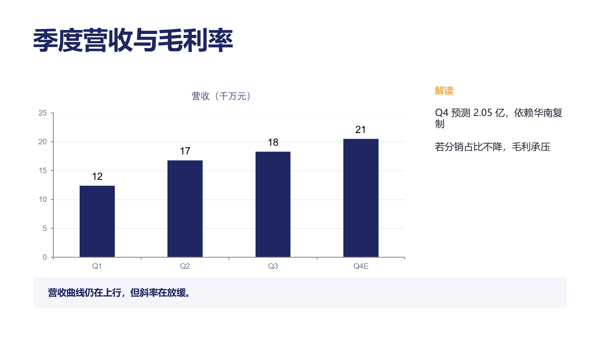
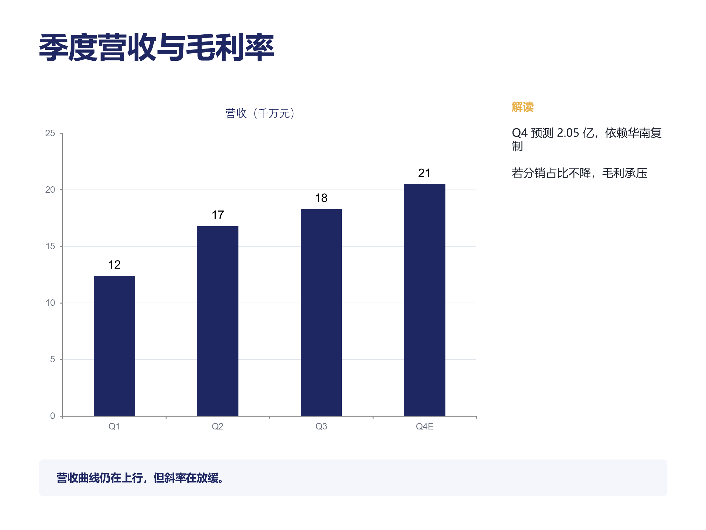

做PPT · slide-forge
同一份 YAML，既产出可在 PowerPoint 里继续编辑的 .pptx，也产出能给直接发链接的单文件 HTML 演示——两种输出共用一套版面模型，不会各说各话。

覆盖封面、目录、KPI、卡片、图表、表格、时间线、流程、对比等主要版式，全部由同一份 YAML 生成。

内容与上一版完全相同，只是画布加高、纵向重新分布——适合投影仪与老式会议室设备。
# 全局安装后，任意目录可用 npm i -g slide-forge slideforge build examples/demo.deck.yaml # PPTX → out/2026-Q3-经营复盘.pptx HTML → out/2026-Q3-经营复盘.html